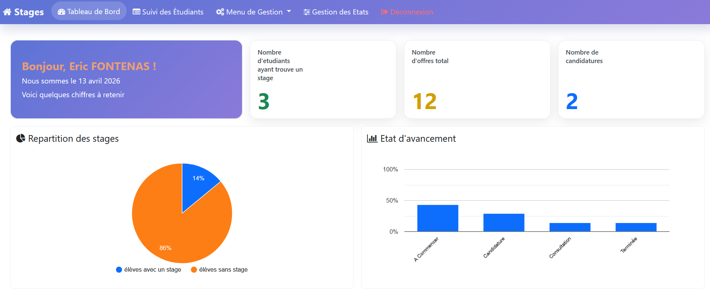
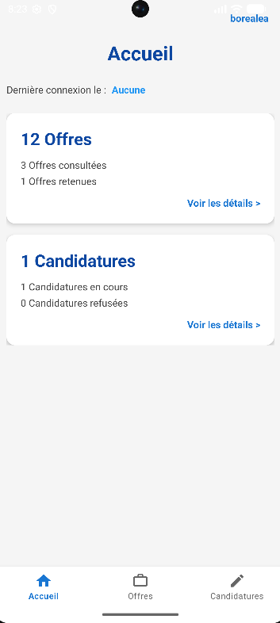
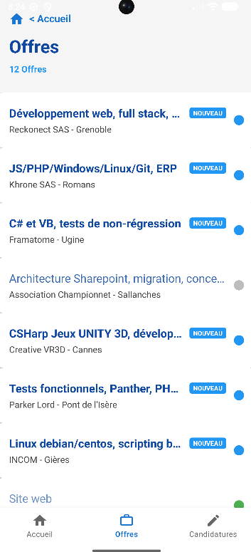
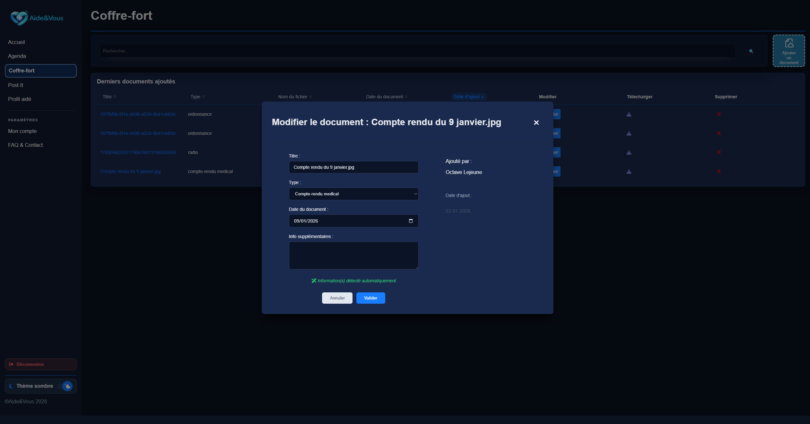
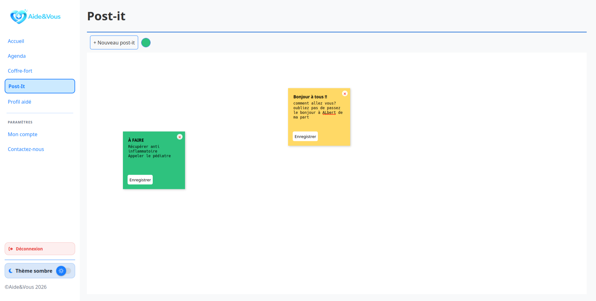
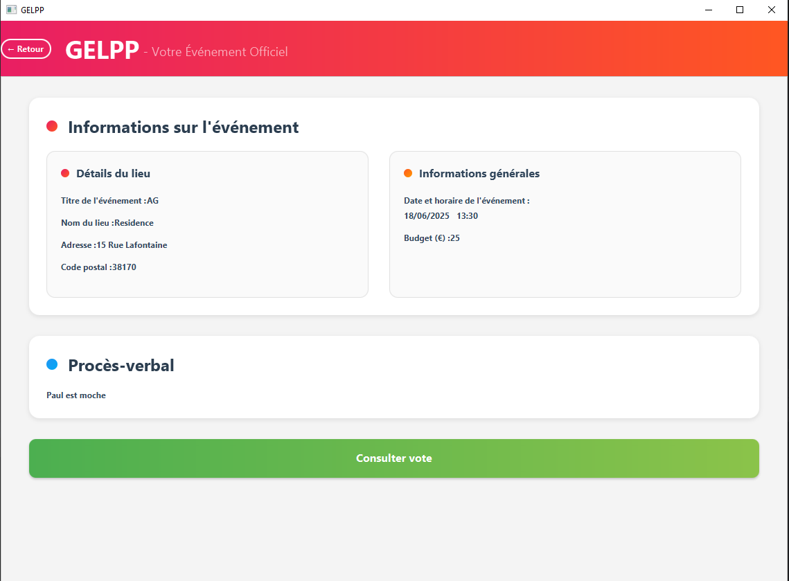
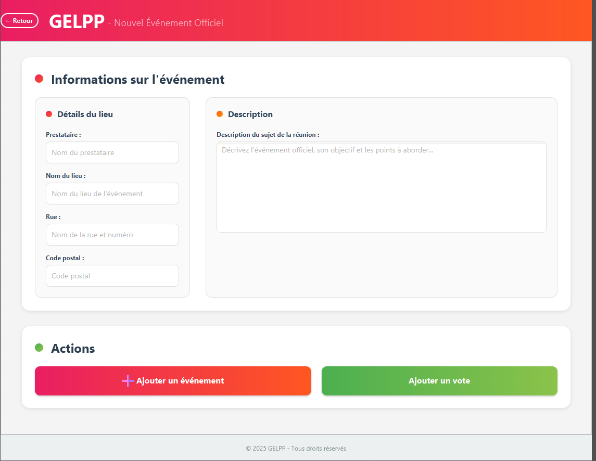
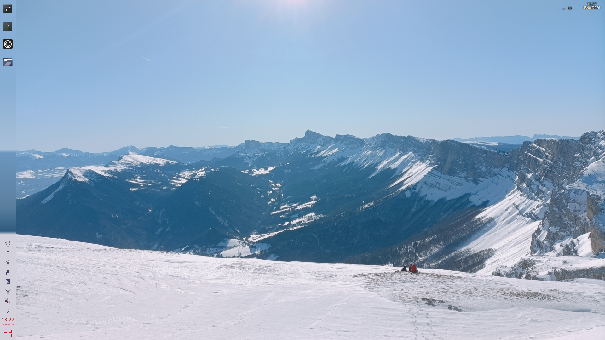

À propos de moi
Parcours
Je suis un jeune étudiant en fin de deuxième année du BUT info de Grenoble, parocurs orienté développement d'application.
Avant cela, j'ai fait mon cursus dans les écoles de secteurs dans les Monts d'Ardèches.
C'est au Lycée Polyvalent du Cheylard que j'ai fait mes premiers petits pas dans la programmation grâce au cours d'NSI
Durant mes 2 premères années de BUT j'ai pu découvrir et maitriser, à différents niveaux, un grand nombre de languages divers donc Java, PHP, JavaScript, C/C++, python
Extrascolaire
Je suis encore en première année du BUT info à l'heure où j'écris ces lignes et j'ai bien été absorbé par mon année, mais normalement cet été je pourrais me lancer dans 2 petits projets que j'ai laissés de côté en attendant d'avoir des cours m'expliquant comment faire cela
Vivant loin dans une contrée reculée mal fournie en moyens de transport en commun, j'ai passé mon permis de conduire pour pouvoir poursuivre mes études plus sereinement
J'aime les montagnes, d'où le fait de venir à Grenoble pour ma poursuite d'études, la proximité des montagnes me permet de faire plus facilement du ski, des randonnées et de l'escalade : 3 sports que j'affectionne particulièrement
Projets
Dans un cadre scolaire
améliration d'un projet existant
Évaluation en groupe sur l'améliration d'un projet
l'école des loustiques
Application mobile pour Android
Interface des menus CROUS
Évaluation en binome sur les API en JS
Aide&Vous
Conception et Évaluation d'un projet libre
Réalisation d'un portefolio
Premier gros projet
Evaluation en group de fin de première année
Réparer et améliorer l'existant
Quoi
Le département informatique nous à fournis une application comportant beaucoup de défaut et notre travail êtait de la réparer et l'améliorer.
Cette application est une application web et mobile pour la gestion de recherche de stage, le côté web est pour l'administration et le côté mobile est pour les étudiants.
Info Globales
- De février à mars 2026
- Le travail fournis est d'environs 50/homme au total
- 4 jours de développement
- Travail réalisé par un groupe de 6 étudiants
Outils
- PHP avec Syfony pour la partie web
- Java avec Android Studio pour la partie mobile
- Docker
- Git
Là où j'ai le plus contribué
- Création et configuration du Docker
- Trouver et corriger des bug mobile
compétences développées
- Utilisation de Docker
- Adaptation rapide en cas de problèmes
images

page de supervision

page d'accueil mobile

page de la liste des offres mobile
l'école des loustiques
Quoi
Dans l'objectif d'apprendre à utiliser Android Studio, Nous avons un projet fil rouge évalué
Info Globales
- De février à avril 2026
- Le travail fournis est d'environs 20h
- Programmation surtout en cours
- Travail semi guidé individuel
Outils
- Java avec Android Studio
- SQLite avec room
Compétences développées
- Gestion des piles d'activités android
- Communication entre les activités android
- Utilisation d'une base de données sous android
Interface d'une API: CROUStillant
Quoi
TP noté en duo qui consiste à mettre en pratique les cours de JavaScrit en utilisant une API extérieure
Avec mon binome, nous avons choisis l'API CROUStillant, une api permettant, entre autre, d'afficher le menu de tous les CROUS de France
Info Globales
- De février à mars 2026
- Le travail fournis est d'environs 10h/homme au total
- Programmation surtout en cours
- Travail réalisé en binome
Outils
- Git
- API CROUStillant
- JavaScript
Là où j'ai le plus contribué
- création de la structure
- appels API et traitement des résultats
Compétences développées
- Découverte approfondis du JavaScript
- Utilisation d'évènement
- Utilisation d'appel asychrone
- Utilisation du LocalStorage
Pour regarder le résultat
cliquez iciAide&Vous
Quoi
Aide&Vous est une application web qui à pour but de soutenir les proche aidant et les aidants familiaux, les personnes qui s'occupe d'un tiers en perte d'autonomie. Les 2 fonctionnalités phares de Aide&Vous sont le Coffre fort numérique possédant une petite IA interne et un agenda interne
Info Globales
- De octobre 2025 à Janvier 2026
- Le travail fournis est d'environs 1000h/homme au total
- 3 semaines de développement
- Conceptualisé et développé par un groupe de 7 étudiants
Outil
- PHP pour tous le backend
- JS pour quelques fonctionnalités graphique
- Python pour la partie reconnaissance automatique des documents afin de la placer directement dans une arborescence de fichier
- Git
Là où j'ai le plus contribué
- Lors des réunions je me suis occupé de faire des comptes rendus
- Je suis l'une des 2 personnes qui à conceptualisé la DB
- Je me suis beaucoup concentré sur le backend PHP
images

coffre fort intelligent

agenda en commun pour une une persinne aidée

moyen de communication original par post-it
Réalisation d'un portefolio
Quoi
Tout au long de notre cursus, l'établissement nous demande un portefolio noté en fin d'année
Info Globales
- Commencé en 2025
- Sans framework et sans IA
- Développé seul mais amélioré suite à divers retours
Outil
- HTML & CSS
- JavaScript natif afin de pouvoir afficher le détail des projets
GELPP
Quoi
Gestionnaire d'Événement pour Lotissement et Propriétés Partagées
C'est une application pour aider à la gestion d'évènement officiel et social
Info Globales
- De avril à juin 2025
- Le travail fournis est d'environs 100/homme au total
- 5 jours de développement
- Conceptualisé et développé par un groupe de 5 étudiants
Outils
- Java
- JavaFX avec Scene Builder
Là où j'ai le plus contribué
- Tests unitaires
- Création des classes
- Petites fonctionnalités divers
compétences développées
- Travail en groupe
- Construction d'une application sans interface web
images


Dans un cadre professionel et personnel
suite à des péripéties, Je n'ai plus de traces de des projets suivants: Tournois de flechettes et Jeu tour par tour
Création d'un collecteur
Sujet de stage de 2eme année de BUT
"Ricing" de mon linux
Personalisais mon interface linux
Jeux tour par tour
Il s'agit là d'un mini jeux qui n'a rien d'exeptionel.
Tournois de Fléchettes
Ce projet est un site local permettant l'organisation de tournois.
Création d'un collecteur et de son interface dans un cadre professionel
Contexte
AET Group est une entreprise spécialisé dans la fabrication d'équpement industriels, afin de garantir la qualité des produits, chaque équipement est essayé
Quoi
Pendant les assaies, un grand nombres de données peuvent être récolté et traité pour différents but comme des rendus pour clients
Dans le cadre de mon stage chez AET groups d'avril à juillet 2026, On m'a confié la mission de faire une interface pour choisir une liste de variables directement dans les automates puis extraires, en temps continue, les données vers une BDD
découpage de ma mission
Info Globales
- D'Avril à juillet 2026
- Le travail fournis est d'environs 392h
- Découverte d'un monde industriel avec des outils différents
- Découverte de l'OPC-UA
- intretiens des RevPI (micro controlleur industriel basé sur Rasbery Pi)
- interface web servant de configuration
Outils
- Python pour tous le backend et le script du collecteur
- HTML/CSS & JS pour quelques fonctionnalités graphique
- Docker
- Git
Missions
- Interface web pour choisir quels données récupérer
- Collecteur de données OPC-UA et Modbus avec système de backup
- Configurer d'ordinateur industriel pour insérer le collecteur
- script automatique qui relance le collecteur
compétences développées
- Recherches des solutions
- Intéragir en entreprise
- Travailler sur des technologies auparavant inconnu
"Ricing" de mon linux
Dans la recherche de personalisation j'ai essayé quelques environnement de bureau
compétences développées
J'ai appris plus profondément le fonctionnement de l'arborescence des fichier linux mais c'est surtout une satisfaction personnel que j'en ai tiré
image

Tournois de Fléchettes
pendant ma prmière année de BUT, dans un but de découvrir le langages PHP je me suis fait un site pour scorer un tournois de fléchettes
compétences développées
Sur ce projet j'ai developpé des compétences sur l'organisation d'éléments(ici des objet joueur) car j'ai developpé un algorithme de round-robin
Jeux tour par tour
Pour m'exercer en Java et découvrir l'intéraction possiblesur android j'ai fait un petit jeu tour par tour
Outils
Java avec Android Studiocompétences développées
J'ai appris plus profondément le fo